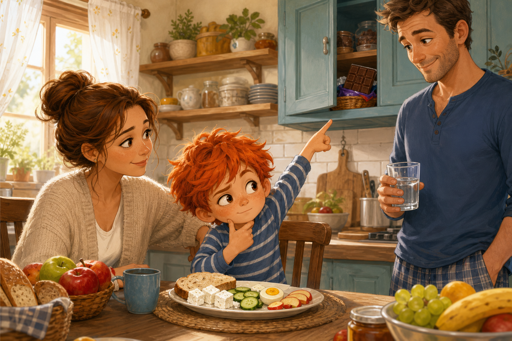
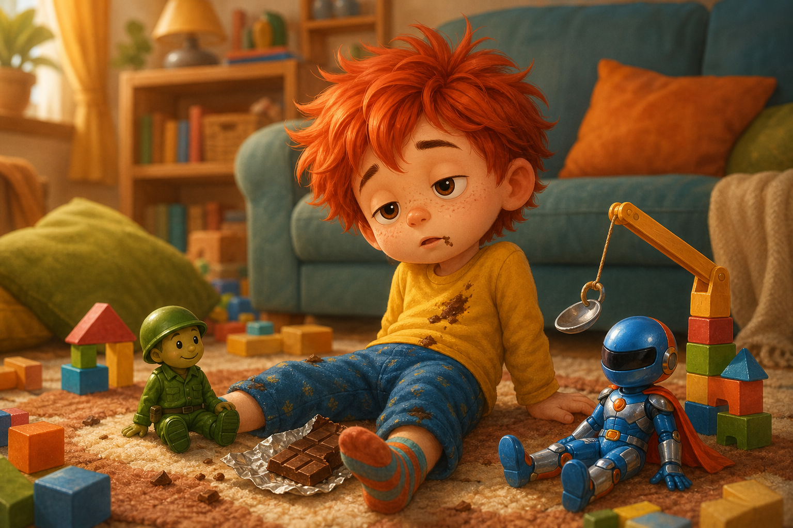
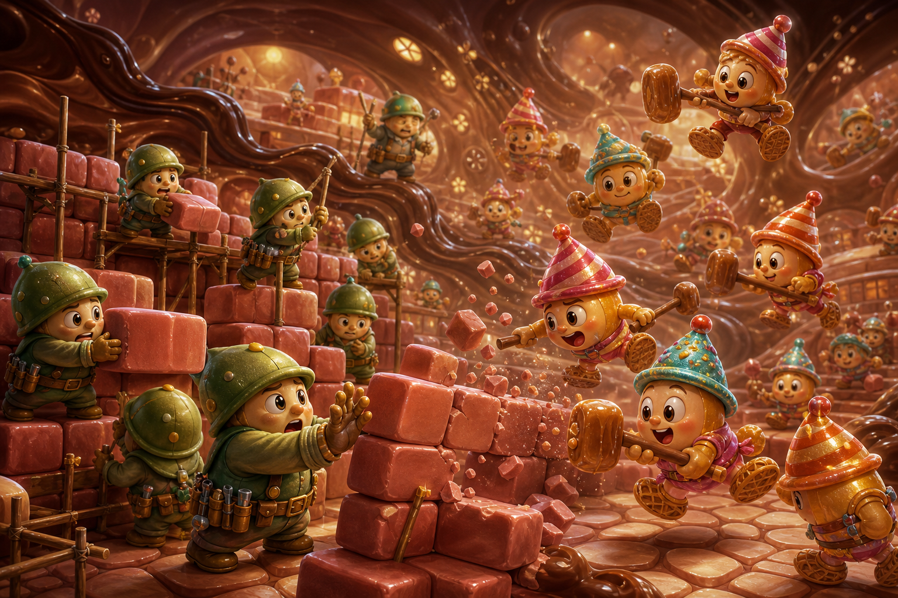
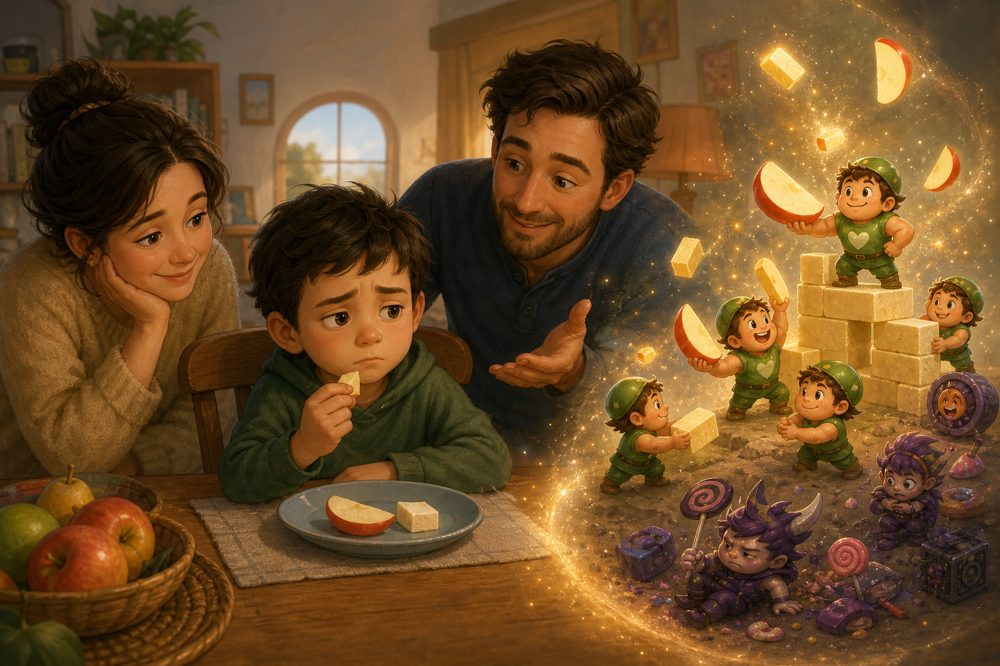
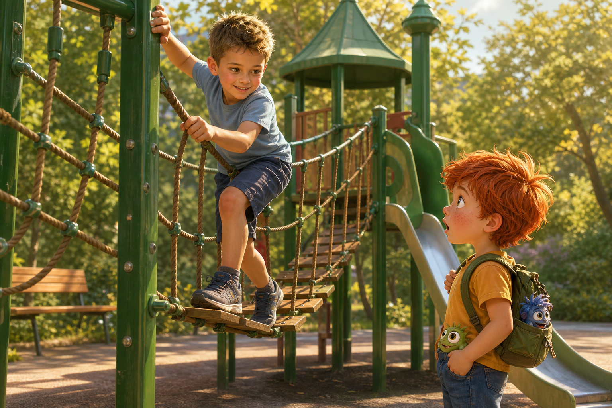
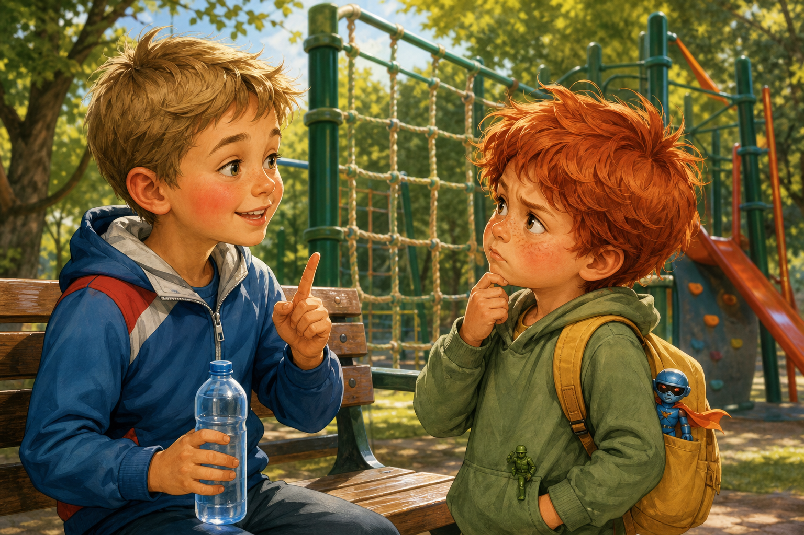
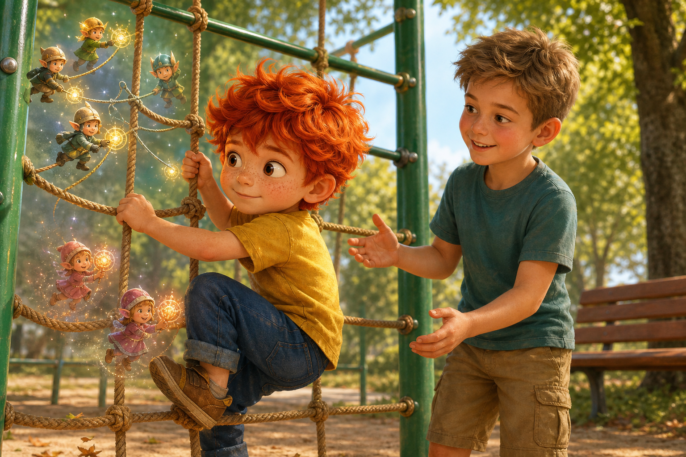
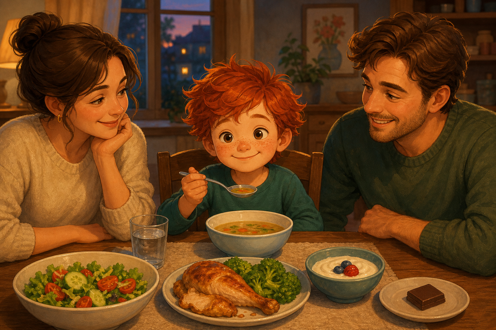
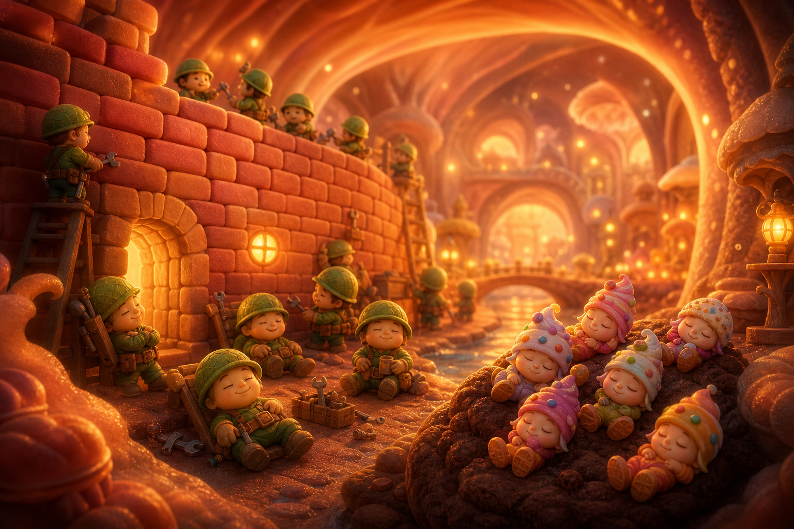

Приказки за Палавко
Палавко и тайната на силната храна

Здравей, аз съм Палавко. Днес ще ти разкажа как реших, че шоколадът е най-важната храна на света, как краката ми станаха меки като преварени макарони и как едно дете на площадката ми разкри тайна, която изобщо не беше тайна, но аз много упорито отказвах да я науча.
Всичко започна една сутрин, когато мама сложи на масата закуска.
Имаше филийка с масло, сирене, краставички, варено яйце и ябълка, нарязана на резенчета.
Палавко погледна чинията.
После погледна мама.
После пак чинията.
- Това не е закуска - каза той.
- А какво е? - попита мама.
- Препятствие.
Мама се усмихна.
- Препятствие към какво?
- Към шоколада - каза Палавко и много сериозно посочи шкафа.
В шкафа имаше един шоколад. Не голям. Не малък. Точно от онези шоколади, които според Палавко сами казват: "Палавко, изяж мее, изяж меее!"
- Първо закуска - каза мама.
- Но аз искам само шоколад.
- Шоколадът е вкусен - каза мама. - Но не може да бъде цяла закуска.
Палавко я погледна така, сякаш тя беше казала, че обувките могат да се носят на ушите.
- Защо?
Татко влезе в кухнята с чаша вода в ръка.
- Защото шоколадът не ти помага да станеш по-силен.
Палавко се намръщи.
- За мен го прави.
- Не е така - каза татко спокойно. - За тичане на тялото ти му трябват добри неща. За катерене и мислене също. Мускулите обичат яйца, сирене, месо, риба, боб, леща, ядки, плодове, зеленчуци, вода...
- Списъкът ти е прекалено дълъг - прекъсна го Палавко. - Виж, шоколад е кратко и вкусно. Една дума. Много удобно.
Мама седна до него.
- Полезната храна е като тухлички за тялото. От нея то строи мускули, сила и енергия.
- Аз не съм къща - каза Палавко.
- Не си - съгласи се мама. - Ти си дете. Затова тухличките трябва да са още по-важни. Растеш.
Палавко погледна ръцете си.
- Аз вече съм достатъчно голям.
- Вчера не стигаше до горния рафт - каза татко.
- Горният рафт е направен неправилно.
Мама сложи пред него резен ябълка.
- Само опитай.
Палавко взе ябълката, помириса я и я остави обратно.
- Мирише на здравословно.
- Това не е обида - каза мама.
- За ябълката може би не е.
После Палавко направи най-бързото движение за деня. Протегна ръка, отвори шкафа, грабна шоколада и избяга към хола.
- Палавко! - извика мама.
- Само проверявам дали е истински! - извика Палавко.
Шоколадът беше истински.
И изчезна бързо.

Малко по-късно Палавко седеше на килима с Рико и Блицко. Пред тях имаше кули от кубчета, писта от възглавници и една лъжица, която днес беше спасителен кран.
- Командире - каза Рико, - предлагам мисия по пренасяне на кубчета.
- След малко - каза Палавко.
- След малко от кога? - попита Блицко.
- От сега.
Палавко се облегна назад. В началото му беше много весело. Шоколадът сякаш беше запалил малки фойерверки в корема му. Искаше да подскача. Искаше да говори бързо. Искаше да направи пет мисии наведнъж.
Но след това фойерверките угаснаха.
Краката му станаха тежки.
Ръцете му станаха лениви.
Главата му стана мътна, като прозорец след дъжд.
- Рико - каза той, - защо подът се е отдалечил?
Рико погледна пода.
- Подът е на стандартното си място.
- Тогава, защо аз се чувствам уморен?
Блицко се наведе към него.
- Може би ти трябва гориво.
- Имах гориво - каза Палавко. - Шоколадово.
- Може би това е било фойерверк, а не гориво - каза Рико.
Палавко не отговори, защото му се доспа.
А в същото време, дълбоко в организма му, ставаше нещо много важно.

Там имаше цял малък град. Не такъв град с улици и светофари, а град от клетки, пътечки, складове за енергия и строителни площадки за мускули.
На една от площадките работеха Мускулчовците.
Те бяха малки здрави същества с каски от грахово зелено, с колани за инструменти и с ръце, силни колкото на мравки, ако мравките можеха да правят лицеви опори.
- Тухлички! - извика главният Мускулчовец. - Трябват ни тухлички за краката!
- Няма тухлички - каза друг.
- Тогава дайте греди за ръцете!
- Няма греди.
- Дайте поне малко яйчена сила, сиренена мазилка, бобена енергия или ябълкови искри!
Третият Мускулчовец отвори склада.
Вътре имаше само лепкава шоколадова мъгла.
От нея изскочиха Захарните Шумници.
Те бяха дребни, лъскави, бързи и много шумни. Имаха шапки като бонбони, обувки като вафли и носеха малки чукчета от карамел.
- Сладки атакаааа! - извикаха те.
- Стойте! - каза главният Мускулчовец. - Това е строителна площадка!
- Вече е площадка за лепкаво пързаляне! - изписка един Захарен Шумник и се плъзна по мускулна тухличка.
Другите започнаха да удрят по стените.
Туп!
Тап!
Пляс!
Мускулните тухлички се разклатиха.
- Не ги чупете! - извика Мускулчовецът. - Те са за тичане!
- Тичането е уморително - каза един Шумник.
- И за катерене!
- Катеренето е високо.
- И за скачане!
- Скачането е тъпо.
Захарните Шумници не бяха зли като в страшните истории. Те просто бяха много нетърпеливи, много шумни и изобщо не разбираха от строеж. Когато имаха прекалено много шоколад и никаква полезна храна, те ставаха като вихър в работилница.
Събаряха.
Блъскаха.
Разбутваха.
Мускулчовците се опитаха да защитят стените.
- Дръжте лявото краче! - извика главният.
- Дясното омеква! - извика друг.
- Ръцете искат почивка!
- Коремът праща съобщение: "Не знам какво става, но не ми харесва!"
И точно тогава Палавко, който седеше на килима, въздъхна толкова тежко, че Блицко почти падна от възглавницата.
- Нещо ми е странно - каза Палавко.
Мама надникна от кухнята.
- Гладен ли си?
- Не.
Коремът му изръмжа.
- Това беше столът - каза Палавко.
- Столът е в другата стая - каза татко.
Мама донесе чинията със закуската.
- Хайде. Малко яйце. Малко сирене. Малко ябълка.
- Не искам.
- Палавко - каза татко, - ако даваш на тялото си само сладко, то първо се радва, после се изморява. Като да запалиш бенгалски огън и да мислиш, че е печка.
Палавко се замисли.
- Бенгалският огън поне е красив.
- Да - каза татко. - Но не може да стопли супа.
Това беше вярно и Палавко не обичаше, когато нещо беше вярно точно преди обяд.
Той изяде едно малко парченце ябълка.

После едно парченце сирене.
После каза:
- Добре, но само защото мускулите ми вероятно го искат.
В организма му Мускулчовците получиха първата доставка.
- Ябълкови искри! - извика един.
- Сиренени тухлички! - извика друг.
- Спасение! - каза главният и сложи каската си по-стабилно. - Строим!
Захарните Шумници се намръщиха.
- Ей, това вече не е толкова лепкаво.
- Точно така - каза Мускулчовецът. - Тук се работи.
След обяд мама и татко предложиха разходка до площадката.
Палавко се съгласи, защото беше изял още малко полезна храна и вече можеше да стои прав без да прилича на мокър парцал.
Навън слънцето светеше ярко. Площадката беше пълна с деца. Някои копаеха в пясъка. Някои се люлееха. Някои тичаха така, сякаш земята им беше дала разрешение да бъдат светкавици.
И тогава Палавко го видя.

Едно момче мина през всички катерушки.
Първо се качи по въжената стена.
После премина по мостчето.
После скочи от ниската платформа, приземи се леко, завъртя се и хукна към пързалката.
След това направи обиколка около площадката и изпревари две по-големи деца.
Не се задъха много.
Не се оплака.
Не каза "чакай малко, краката ми са от макарон".
Просто се засмя.
Палавко го гледаше с отворена уста.
- Той сигурно има мотор в обувките - прошепна Палавко.
- Няма - каза Рико от джоба му.
- Тогава тайни пружини.
- И това няма - каза Блицко от раничката. - Но може да има закуска.
Момчето дотича до пейката и взе бутилка вода. Имаше тъмноруса коса, живи очи и бузите му бяха червени от движение. Изглеждаше силно, но не като герой от плакат. Изглеждаше като дете, което много играе, спи добре и не се кара с обяда си всеки ден.
- Здрасти - каза то. - Аз съм Боян.

Палавко се изправи.
- Аз съм Палавко. Ти как мина през всички катерушки?
- С крака - каза Боян.
Палавко го изгледа.
- Това го знам. Моите крака също са крака, но днес се държат като две тъжни юфки.
Боян се засмя.
- Може би са гладни.
- Не са. Аз ядох шоколад.
Боян кимна много сериозно.
- А, значи са гладни.
Палавко примигна.
- Току-що казах, че ядох.
- Шоколадът е вкусен - каза Боян. - И аз обичам шоколад. Но ако ям само него, на площадката ставам бърз за пет минути, после край. Все едно някой ми е изключил батериите.
Палавко присви очи.
- Значи и ти имаш батерии?
- Имам закуска - каза Боян. - Днес ядох яйце, филийка, сирене, домат и банан. После пих вода. Вчера вечерях супа и кюфтета с картофи. А баба ми прави леща, която според нея може да вдигне къща.
- Вдигала ли е къща? - попита Палавко.
- Не. Но веднъж след нея вдигнах раницата на татко.
Палавко погледна катерушките.
- Значи тайната ти е... леща?
- Не само. Тайната е да даваш на тялото си различни добри неща. То после ти ги връща като сила.
- А сладкото?
- Сладкото е като гост на рожден ден - каза Боян. - Хубаво е да дойде. Но ако гостът реши да живее у вас и да командва кухнята, става проблем.
Палавко си представи шоколад, който седи на масата с корона и казва: "От днес всички ще вечерят мен."
Не беше лоша картина.
Но може би не беше добра вечеря.
Боян посочи въжената стена.
- Искаш ли да пробваш?
Палавко погледна стената.
После краката си.
- Не знам дали юфките са готови.
- Ще започнем от най-ниското - каза Боян. - Не трябва да минеш всичко наведнъж.
Палавко тръгна към катерушката. Хвана първото въже. Стъпи на ниската греда. Ръцете му потрепериха малко.

В организма му Мускулчовците веднага се събраха.
- Внимание! Катерене! - извика главният.
- Имаме малко сиренени тухлички!
- Имаме ябълкови искри!
- Имаме вода!
- Захарните Шумници?
Шумниците седяха в ъгъла и се цупеха.
- Скучно е, когато всичко е подредено - каза един.
- Може да помогнете - предложи Мускулчовецът.
- Ние?
- Да. Ако не блъскате, можете да носите искри за бързо движение.
Шумниците се спогледаха.
- Можем ли да носим искри с викане?
- Малко викане.
- Ураааа! - извикаха те и хукнаха.
Палавко се качи още една стъпка.
После още една.
Не стигна до върха. Но стигна по-високо, отколкото очакваше.
- Видя ли? - каза Боян. - Тялото обича, когато му помагаш.
Палавко слезе и пое въздух.
- Не минах цялата катерушка.
- Днес не - каза Боян. - Утре може малко повече. Силата не идва изведнъж. Тя се изгражда.
Палавко се усмихна.
- С тухлички?
- С тухлички - каза Боян.
Вечерта, когато се прибраха, мама сложи на масата супа, пилешко месо, салата и малка купичка с кисело мляко.

Палавко седна.
Погледна чинията.
Погледна шкафа.
После пак чинията.
- Мамо - каза той, - ако изям от полезното, може ли после малко шоколад?
Мама се усмихна.
- Може. Малко.
- Защото шоколадът е гост - обясни Палавко. - Не управител на кухнята.
Татко вдигна вежди.
- Това е много мъдро.
- Боян ми го каза. Той има крака, които не са юфки.
Палавко започна със супата. После хапна от месото. После от салатата. Не всичко му беше еднакво любимо. Доматът беше подозрително мокър. Салатата шумеше. Киселото мляко изглеждаше прекалено спокойно.
Но той яде.
А вътре в него Мускулчовците строяха.
Тухличка за краката.
Греда за ръцете.
Искра за тичане.
Капка вода за всичко.
Захарните Шумници стояха наблизо и чакаха своя ред.
- А ние? - попита един.
- Вие ще дойдете после - каза главният Мускулчовец. - За десерт.
- Десерт звучи важно.
- Важно е. Но е след вечерята.
Когато Палавко получи малкото парче шоколад, го изяде бавно. Не защото шоколадът беше станал по-малко вкусен. Напротив. Беше си чудесен.
Но този път не беше сам в корема му.
Имаше супа.
Имаше салата.
Имаше сила.
Преди сън мама го зави.
- Какво научи днес? - попита тя.
Палавко се замисли.
- Че шоколадът не може да минава катерушки вместо мен.
- Точно така.
- И че ако искам краката ми да не са юфки, трябва да им давам тухлички.
Татко се засмя от вратата.
- Това е най-доброто обяснение за храненето, което съм чувал.
Палавко се сгуши в завивката.
- Утре може ли пак да отидем на площадката?
- Може - каза мама.
- И може ли за закуска да има яйце, сирене и ябълка?
Мама го погледна изненадано.
- Разбира се.
Палавко затвори очи.
После ги отвори пак.
- И едно съвсем малко парченце шоколад след това. Да не се обиди гостът.
- Ще видим - каза мама.
Палавко кимна.
Това не беше "да", но не беше и "не".
Беше родителско "ще видим", което понякога значеше "може", понякога "не", а понякога "ако си измиеш зъбите без театър".
На нощното шкафче Рико стоеше изправен. Блицко блестеше тихо.
А дълбоко в организма на Палавко Мускулчовците най-после седнаха да си починат до новата здрава стена.

Захарните Шумници бяха заспали върху една шоколадова троха.
И за първи път от сутринта никой нищо не събаряше.
ПОУКА
Сладкото може да бъде вкусна радост, но не може да бъде цялата храна. Тялото има нужда от различни полезни неща, за да расте, да тича, да скача, да мисли и да се катери. Когато се храним добре, силата се строи малко по малко, а лакомствата остават това, което трябва да бъдат: малък гост, а не господар.